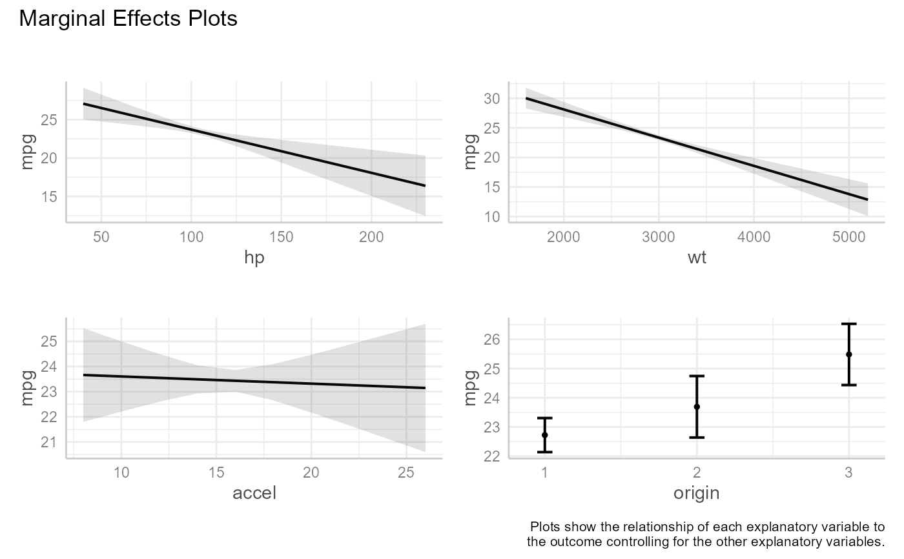
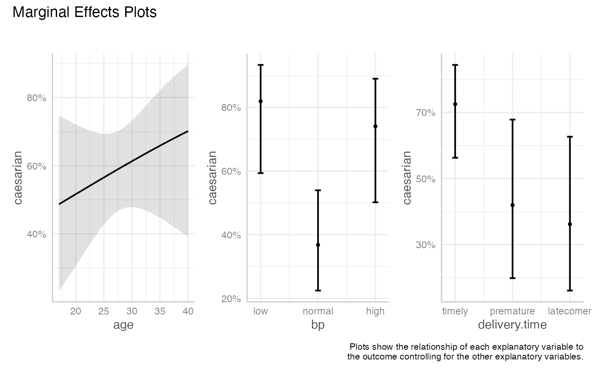

me_plots.RdThe plots function generates one or more graphs displaying the relationship
between each predictor and the outcome, controlling for the other predictors
in the model.
me_plots(
x,
points = FALSE,
size = 1,
alpha = 0.2,
jitter = 0.03,
ci = TRUE,
page = FALSE,
...
)an object of class "lm" or "glm"
logical; If TRUE, raw data points are plotted (default = FALSE)
size of data points (default = 1)
transparency of data points (from 0 to 1; default is 0.2)
amount of jitter for points (from 0 to 1; default = .03)
logical; If TRUE, display 95% confidence intervals (default = TRUE)
logical; If TRUE, each graph will be printed separately.
additional arguments to be passed to
plot.ggeffects.
a list of ggplot2 graphs.
The plots function uses the ggeffect and
plot.ggeffects functions from the ggeffects package
to plot marginal effects for a linear or generalized linear model.
A plot is created for each predictor variable (called the "focal" variable). Predicted response values are calculated by varying the values of the focal variable while keeping the non-focal variables (the other predictor variables) constant. Non-focal numeric variables are set to their means. If factors are present in the model, predicted values are calculated for each combination of non-focal categorical variable levels and averaged based on category size. See the https://strengejacke.github.io/ggeffects/index.html for details.
If page = TRUE,
the individual graphs are combined into a single plot via the
the wrap_plots function in the patchwork package.
Otherwise, individual plots are printed.
The me_plots function can not handle models that include
as.factor or factor in their formulas. Create the modified
variables prior to fitting the model
(e.g., mtcars$cyl <- factor(mtcars$cyl)).
Additionally, the function can not handle models that include interactions. In this
case, consider using the ggeffects package with grouping and
faceting.
#######################
# Multiple regression #
#######################
fit <- lm(mpg ~ hp + wt + accel + origin, data = auto_mpg)
me_plots(fit)

#######################
# Logistic regression #
#######################
fit2 <- glm(caesarian ~ age + bp + delivery.time, family = binomial, data = caesarian)
me_plots(fit2)
